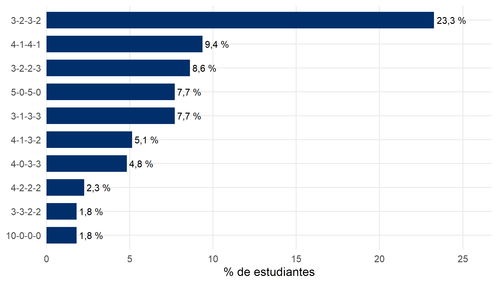
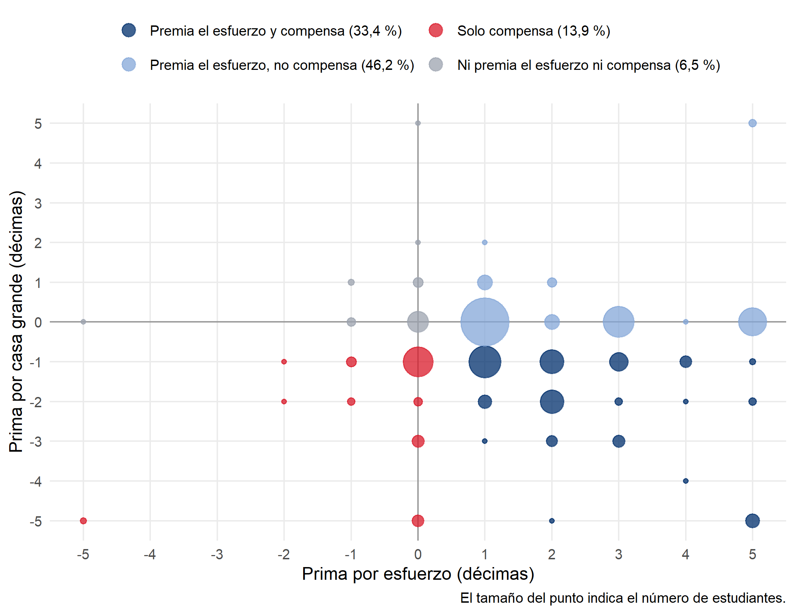
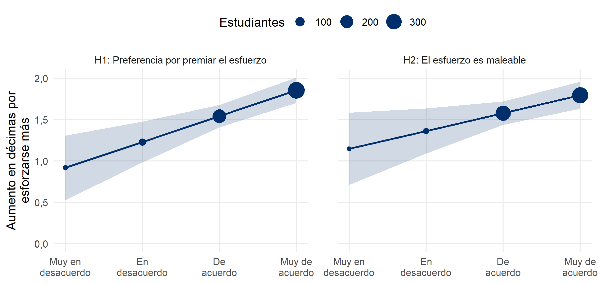

| Perfil | M | DE | % recibe ≥ 3 (aprueba) |
|---|---|---|---|
| A: se esfuerza más, casa pequeña | 3,73 | 1,35 | 94,3 |
| B: se esfuerza menos, casa grande | 1,35 | 0,96 | 8,5 |
| C: se esfuerza más, casa grande | 2,94 | 1,20 | 73,3 |
| D: se esfuerza menos, casa pequeña | 1,98 | 1,17 | 31,6 |
El experimento distribucional (DSE) de EDUMER, ola 2
Esfuerzo, oportunidad y reparto de décimas
1 El experimento
Cada estudiante reparte 10 décimas entre cuatro compañeros ficticios, todos con nota 3,7. Los perfiles cruzan dos atributos en un diseño factorial 2×2: esfuerzo (más o menos que la mayoría) y oportunidad (casa grande o pequeña para estudiar).
| Perfil | Esfuerzo | Oportunidad |
|---|---|---|
| A | Se esfuerza más | Casa pequeña |
| B | Se esfuerza menos | Casa grande |
| C | Se esfuerza más | Casa grande |
| D | Se esfuerza menos | Casa pequeña |
Muestra: 662 estudiantes de 7° básico y 2° medio (EDUMER, ola 2) con un reparto válido y respuesta en ambos moderadores.
2 Variable dependiente
Décimas asignadas a cada perfil (0 a 10), en formato largo: cuatro filas por estudiante (2.648 observaciones). Las variables de nivel 1 (esfuerzo y oportunidad) se codifican −0,5 / +0,5, es decir, quedan centradas dentro de cada estudiante: cada coeficiente es la diferencia en décimas entre los dos niveles del atributo.
3 Descriptivos

Los perfiles que se esfuerzan (A y C) reciben más y, con igual esfuerzo, se favorece a la casa pequeña (A sobre C, D sobre B). El reparto más común es 3-2-3-2.
4 Primas individuales
Para cada estudiante: prima por esfuerzo = (A + C)/2 − (B + D)/2 y prima por casa grande = (B + C)/2 − (A + D)/2. Una prima por casa negativa indica compensación.
| Prima | M | DE | % positiva | % cero | % negativa |
|---|---|---|---|---|---|
| Prima por esfuerzo | 1,66 | 1,62 | 79,6 | 17,4 | 3,0 |
| Prima por casa grande | -0,71 | 1,27 | 5,0 | 47,7 | 47,3 |

Cada punto es una combinación de primas. Los cuadrantes de la izquierda reúnen a quienes no premian el esfuerzo: abajo, los que solo compensan a la casa pequeña; arriba, los que no compensan (repartos parejos o que favorecen al que se esfuerza menos o a la casa grande).
5 Regresiones
H1: a mayor preferencia por premiar el esfuerzo, mayor efecto del esfuerzo sobre las décimas. H2: a mayor creencia en que el esfuerzo es maleable, mayor efecto del esfuerzo.
M0 es un modelo lineal sin efectos aleatorios (MCO), como referencia. M1 a M4 son modelos multinivel de las décimas, con pendientes aleatorias del esfuerzo y la oportunidad por estudiante (Heisig y Schaeffer, 2019). Las variables de nivel 1 están centradas dentro del estudiante (−0,5 / +0,5) y los moderadores de nivel 2, en su media.
| Predictor | M0 | M1 | M2 | M3 | M4 |
|---|---|---|---|---|---|
| Intercepto | 2,50*** | 2,50*** | 2,50*** | 2,50*** | 2,50*** |
| Esfuerzo | 1,66*** | 1,66*** | 1,66*** | 1,66*** | 1,66*** |
| Oportunidad (casa grande) | -0,71*** | -0,71*** | -0,71*** | -0,71*** | -0,71*** |
| Esfuerzo × Oportunidad | -0,16 | -0,16* | -0,16* | -0,16* | -0,16* |
| Esfuerzo × Preferencia (H1) | 0,31*** | 0,28*** | |||
| Esfuerzo × Maleable (H2) | 0,22* | 0,13 | |||
| Varianzas | |||||
| Pendiente del esfuerzo | 1,95 | 1,89 | 1,92 | 1,88 | |
| Pendiente de la oportunidad | 0,96 | 0,96 | 0,96 | 0,96 | |
| Residual | 1,39 | 0,66 | 0,66 | 0,66 | 0,66 |
| Ajuste | |||||
| Observaciones / estudiantes | 2.648 / 662 | 2.648 / 662 | 2.648 / 662 | 2.648 / 662 | 2.648 / 662 |
| Log-verosimilitud | -4.193,2 | -3.963,6 | -3.955,9 | -3.960,7 | -3.954,9 |
| AIC | 8.396,3 | 7.941,2 | 7.927,8 | 7.937,4 | 7.927,9 |
| BIC | 8.425,7 | 7.982,4 | 7.974,8 | 7.984,4 | 7.980,8 |
| χ² vs. M1 | 15,47*** | 5,84* | 17,38*** |
Nota. Coeficientes en décimas. M0: regresión lineal sin efectos aleatorios; M1 a M4: modelos multinivel estimados por máxima verosimilitud. Esfuerzo y oportunidad centrados dentro del estudiante (−0,5 / +0,5); moderadores centrados en la media. χ² vs. M1: test de razón de verosimilitud. * p < ,05; ** p < ,01; *** p < ,001.

6 Entropía de Shannon
La entropía resume el reparto de cada estudiante en un solo número: H = −Σ pi ln(pi), con pi = décimasi / 10. Vale 0 si todo va a un perfil (10-0-0-0) y 1,37 en los repartos más parejos (3-2-3-2). Mide cuánto se diferencia, no a quién se favorece.
| Reparto (A-B-C-D) | % estudiantes | Entropía |
|---|---|---|
| 3-2-3-2 | 23,3 | 1,37 |
| 3-2-2-3 | 8,6 | 1,37 |
| 4-1-4-1 | 9,4 | 1,19 |
| 5-0-5-0 | 7,7 | 0,69 |
| 10-0-0-0 | 1,8 | 0,00 |
| Predictor | E1 | E2 | E3 |
|---|---|---|---|
| Intercepto | 1,178*** | 1,178*** | 1,177*** |
| Preferencia por premiar el esfuerzo | -0,014 | -0,012 | -0,011 |
| El esfuerzo es maleable | -0,001 | -0,000 | -0,000 |
| Las personas obtienen lo que merecen | 0,021 | 0,022 | |
| Igualdad de oportunidades en Chile | -0,020 | -0,021 | |
| Privilegio percibido | -0,033* | -0,031* | |
| Justicia de mercado en educación | 0,004 | 0,004 | |
| Meritocracia en la escuela | 0,010 | 0,010 | |
| Libros en el hogar | -0,005 | ||
| 2° medio (ref.: 7° básico) | -0,002 | ||
| Mujer (ref.: hombre) | 0,000 | ||
| Otro género (ref.: hombre) | 0,041 | ||
| Estudiantes | 653 | 653 | 653 |
| R² | 0,002 | 0,014 | 0,014 |
| F vs. modelo anterior | 1,56 | 0,15 |
Nota. Regresiones lineales, una fila por estudiante, con la misma muestra en los tres modelos. Variables continuas centradas en la media; actitudes de 1 (muy en desacuerdo) a 4 (muy de acuerdo); privilegio percibido = promedio de “a quienes tienen padres ricos les va mejor” y “a quienes tienen buenos contactos les va mejor”. * p < ,05; ** p < ,01; *** p < ,001.
Referencias
Heisig, J. P., y Schaeffer, M. (2019). Why you should always include a random slope for the lower-level variable involved in a cross-level interaction. European Sociological Review, 35(2), 258–279. https://doi.org/10.1093/esr/jcy053